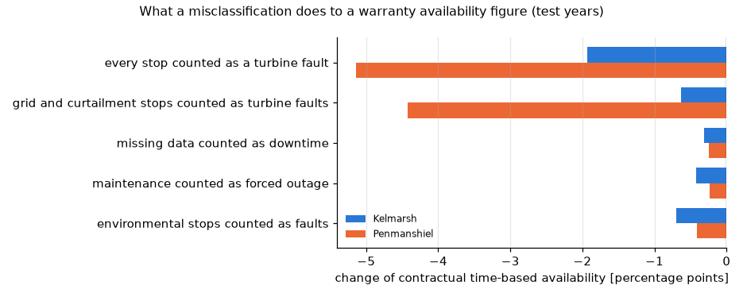

Warranty availability depends on how a stop is booked
Stops, their causes and the energy they cost, found in the 10-minute SCADA of three open UK wind farms, and what a wrong category does to contractual availability.
97.9 % to 93.5 %one farm-year's warranty availability when grid and curtailment stops are booked as turbine faults
EUR 0.23 mliquidated damages that would follow at a 97 % guarantee, but are not owed
0.5-1.0 ppmean error of availability from SCADA signals alone against the operator's logs, per turbine-year

Change of the time-based warranty availability when stops are booked under the wrong category (test years: Kelmarsh 2020-2021, Penmanshiel 2020).
The problem
Every availability guarantee, O&M invoice and lost-production claim starts from three questions: when was a turbine stopped or limited, why, and how much energy did it cost. The usual answer is the controller's status log, mapped by the manufacturer onto the IEC 61400-26 categories.
An owner who wants to check that figure, or whose logs are incomplete, needs to know how far the 10-minute signals go on their own, and how much the category of a stop moves the contractual number.
Data and method
Three open farms, two manufacturers: Kelmarsh (6 x Senvion MM92, 2016-2021), Penmanshiel (14 x Senvion MM82, 2018 and 2020) and Hill of Towie (21 x Siemens SWT-2.3, 2021). The operators' own logs are the yardstick.
Held-out test periods: all numbers are measured on data no method saw during development (Kelmarsh 2020-2021, Penmanshiel 2020, Hill of Towie July-December 2021).
Finding stops and deratings from power, wind speed, rotor speed, pitch, yaw and temperature only: a simple rule, a power-curve residual, a pitch and rotor-speed signature, a hidden Markov model and gradient boosting.
Cause and cost: categories from transparent rules or gradient boosting; lost energy from the turbine's own anemometer, its running neighbours or a wake-aware reference.
Availability: time- and energy-based, under two illustrative presets (IEC operational, and a typical manufacturer warranty with a 60-hour maintenance allowance), plus what-if scenarios for wrong categories.
Result
The everyday rule "no power although the wind is above cut-in" raises 4,833 alarms for 1,412 logged stops at Penmanshiel. A parked rotor, with the blades at the parking angle and the rotor still, finds stops with F1 0.86, 0.91 and 0.80 on the three farms without any training. Gradient boosting trained on the two Senvion farms reaches 0.92 and 0.93 there and 0.83 on the Siemens farm.
Time-based warranty availability from the signals alone is within 0.5-1.0 percentage points of the figure from the logs (mean absolute error per turbine-year).
Booking the cause wrong moves it further. Counting grid trips, curtailment and park-controller stops as turbine faults costs 0.6 pp at Kelmarsh and 4.4 pp at Penmanshiel, where the logged 97.9 % for 2020 becomes 93.5 %. That is below a typical 97 % guarantee: about EUR 0.23 million of liquidated damages for one farm-year (81.5 GWh potential, 80 EUR/MWh) that are not owed.
The signals recognise grid trips, park-controller stops and technical standby well, but they cannot separate scheduled maintenance, planned corrective work and forced outages. These look the same in SCADA, and it is the distinction a warranty depends on.
A stopped turbine's own anemometer is biased: 3.0 % high at Kelmarsh, 2.6 % low at Penmanshiel and 9.2 % low at Hill of Towie. On Hill of Towie it books 14 % less lost energy than the wake-aware reference.
Warranty time-based availability (typical manufacturer preset), change against the logs
Booking
Kelmarsh
Penmanshiel
Every stop counted as a turbine fault
-1.9 pp
-5.1 pp
Grid trips and curtailment / park-controller stops counted as turbine faults
-0.6 pp
-4.4 pp
High-wind, icing and low-temperature stops counted as faults
-0.7 pp
-0.4 pp
Scheduled maintenance counted as forced outage (60 h allowance lost)
-0.4 pp
-0.2 pp
Missing data counted as downtime
-0.3 pp
-0.3 pp
Test years: Kelmarsh 2020-2021 (12 turbine-years), Penmanshiel 2020 (14 turbine-years).
What it means for a decision
Reconcile the category mapping, not only the availability percentage. At Penmanshiel the treatment of grid and curtailment stops moved availability by 4.4 pp, several times the error of detecting the stops from signals.
10-minute signals are enough to check the timing, duration and lost energy of stops independently of the manufacturer's log. The split between maintenance and faults still needs status codes.
Choose the lost-energy reference on purpose. The stopped turbine's own anemometer can be off by several per cent, and the sign depends on the turbine type.
Read how the contract treats data gaps before trusting an availability figure computed from SCADA. Penmanshiel's 15-day park-controller stop in 2020 appears in SCADA as missing data, while the operator booked 3.8 GWh of lost production to it.
Limitations
The logs are the operator's booking, not the truth, and conventions differ: low-wind stops are technical standby at the Senvion farms and environmental at Hill of Towie, where the cause classifiers transfer poorly (19-30 % of events right).
Deratings are the weak part: there are few in the test periods, and the best detector reaches F1 0.42.
Three UK farms and two manufacturers; rule thresholds and trained models may not transfer to other turbines.
The contract presets are illustrative. IEC 61400-26 leaves the allocation of categories to the contract.